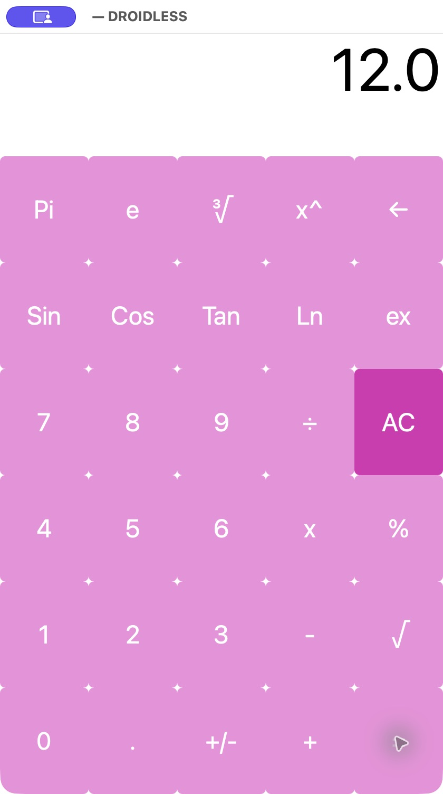

DROIDLESS / Documentation
Peek under
the hood.
Build it, inspect an APK, and follow the point where Android bytecode meets native desktop UI.
Build & run
This notebook describes current source, including navigation added after v0.1.0. The release archive retains its original preview scope. Install Rust 1.95.0 and, on macOS, Xcode Command Line Tools for the Objective-C/AppKit bridge. The runtime build does not require an Android SDK. Read the preview scope notes.
git clone https://github.com/OthmaneBlial/droidless.git
cd droidless
cargo build --release --locked
sh tools/fetch-kascalc.sh
target/release/droidless run artifacts/apks/KasCalc.apkThe last command opens native controls on macOS. Headless mode executes the guest and emits the laid-out View tree as JSON. This path has been tested on macOS; Linux has no verified build or native UI yet.
target/release/droidless run artifacts/apks/KasCalc.apk \
--headless --click 7 --click + --click 5 --click =APK parsing is not a compatibility guarantee. Begin with the demonstrated APKs and treat other apps as experiments.
CLI reference
Use run explicitly, or pass an APK path directly. For example, droidless app.apk starts the runtime. The following commands accept a single APK path.
| Command | Output |
|---|---|
inspect | Package, version, SDK fields, launcher, module counts and declared components. |
manifest | Parsed manifest as JSON. |
dex | DEX versions and class, method, field, string and code-unit counts. |
classes / methods | Class descriptors or method signatures. |
resources | Compiled resource table as JSON. |
inspect-ui | Launch the guest headlessly and print its View tree. |
target/release/droidless inspect artifacts/apks/KasCalc.apk
target/release/droidless run artifacts/apks/KasCalc.apk \
--headless --trace-framework --trace-lifecycle --stats--trace-bytecode prints instruction locations; --trace-methods prints calls; --trace-framework prints compatibility calls; --trace-lifecycle prints lifecycle transitions. --stats or --heap-stats reports parse time, elapsed time, instruction and call counts, and heap statistics. These are diagnostics, not comparative benchmarks.
--click TEXT replays a View click. --key CHARACTER replays key-down/up events through the guest’s key listener. The following headless sequence produced 2.0; it does not establish KasCalc native keyboard delivery. Native Counter key delivery was checked separately.
target/release/droidless run --headless artifacts/apks/KasCalc.apk \
--key 7 --key - --key 5 --key =Current source also provides --back. Escape delivers virtual onBackPressed in a native window, including APK overrides. This authored fixture shows a two-screen round trip:
target/release/droidless run --headless fixtures/generated/intents.apk \
--click "Open detail" --backArchitecture
The workspace separates binary formats, execution, and the desktop host into three crates.
droidless-formats- Own parsers for DEX, Android binary XML and
resources.arsc; ZIP/deflate reading uses the Rustzipcrate. The manifest identifies the launcher Activity. droidless-runtime- A DEX register interpreter, handle-based object heap with mark-and-sweep collection, method dispatch, lifecycle callbacks, framework methods, XML inflation and View layout.
droidless- Inspection and runtime commands. On macOS, a small Objective-C bridge renders AppKit views and routes input callbacks into guest methods.
A click invokes the guest’s registered onClick handler or XML callback, executes its bytecode, then redraws the native controls from the resulting View tree. There is no application-specific calculator implementation in the host.
Execution is bounded: the guest call stack is capped at 128 frames, with five million instructions per launch, input or close transaction. APK parsing rejects unsafe ZIP paths, duplicates, symlinks and oversized inputs without extracting files. These limits do not make the prototype a security sandbox.
There is no audited process isolation, complete bytecode verifier or APK signature trust policy. Inspected Android permissions grant no desktop capabilities; guest filesystem, network and native-library APIs are unavailable. Use trusted APKs. Read the full security boundaries.
Compatibility
The target today is a narrow slice of traditional Java Activity applications. Supported operations exist at the level of particular methods and opcodes, not complete Android API classes.
| Area | Current surface |
|---|---|
| Execution | Standalone DEX 035/037/038/039/040 and an interpreter subset covering arithmetic, branches, arrays, fields, objects, calls, dispatch and explicit/common implicit Java throw/catch/finally. No JIT. |
| Lifecycle | Launcher discovery and basic Application creation. Current source adds explicit same-APK Intents, typed Bundle extras, finish, virtual Back callbacks and a preserved Activity stack. Native transitions and clean root finish are verified in the authored Intents fixture. |
| Views | TextView, Button, EditText, LinearLayout and FrameLayout subsets; TableLayout/TableRow use the basic linear model. Approximate measurement and styling. |
| Resources | Compiled strings and supported layout attributes, references, XML callbacks and includes. Default configuration wins; full qualifiers, themes and styles remain incomplete. |
| Input evidence | Native KasCalc mouse and Counter text-copy/ordinary key delivery proven. Counter text evidence uses accessibility value editing. Clipboard paste, complete focus/IME and gesture behavior remain incomplete. |
| Platform | macOS ARM64 native UI demonstrated. Linux headless path exists; Linux build and native UI are unverified. |
| Outside scope | AndroidX, Compose, modern Kotlin patterns, JNI/native libraries, services, implicit/external intents, timers, storage, networking, full Android graphics and Linux GUI. |
Explicit throws and common implicit Java faults are catchable: integer/long zero division, null access/throw, negative array sizes, array bounds/store errors, casts, string bounds and numeric parse failures propagate guest Throwable objects. Compiled tests cover 17 fault paths, typed hierarchy matching, cross-frame catches, catch-all/finally and getMessage.
Inherited interface assignability and reference-array covariance are exercised by compiled Java tests. Failed class initialization persists: non-Error causes are wrapped in ExceptionInInitializerError, existing Error subclasses propagate directly, and later access throws NoClassDefFoundError. Causes remain rooted through garbage collection.
Concurrent initialization and initialization of default-method superinterfaces remain unsupported. Instruction/field/method checks are not a complete Java type verifier. Unsupported APIs, malformed instructions and resource ceilings remain terminal diagnostics; unsupported methods/opcodes retain method, DEX module and PC context.
Multi-DEX APKs are parsed; split-APK installation is unsupported. Newer invoke forms, container DEX 041 and optimized/quickened DEX are rejected. The resource and layout implementation does not reproduce the complete Android rendering system. Read the exact opcode groups and known ceilings.
Evidence
KasRoudra’s KasCalc v1.0 release is an independently built, unmodified calculator APK. Its SHA-256 is:
6010d2f142cd8d0114ab627a44b50b5dc223b4d94ae5a235f836afbae211f505Native macOS button clicks demonstrated 7 + 5 = → 12.0, 8 × 8 = → 64.0 and √64 → 8.0. The screenshot below captures the first result.


The macOS executable’s linked-library inspection showed AppKit, QuartzCore, Foundation and system libraries, with no Android runtime. No emulator or Android subprocess fallback participates in execution. KasCalc is fetched with SHA-256 verification and is not redistributed here; its GPL-3.0 source and license remain upstream.
Separately, ten headless KasCalc cases passed through its own listeners: addition, multiplication, division, subtraction, decimals, square/cube roots, backspace, sign and reset. Headless KeyEvent replay produced 2.0 for 7 − 5 =.
Automated tests also execute the unmodified SmallestAPK Hello World app and a separately labeled DROIDLESS-authored Counter fixture. In the current native Counter build, setting the text field to Bonjour and clicking Copy input displayed Bonjour through the APK callback. An ordinary native letter key reached its OnKeyListener, displaying key 45 for the logical q supplied by the French host keyboard layout; the consumed key did not enter the field.
Closing native Counter emitted onPause, onStop and onDestroy, then exited with status 0. The current KasCalc build was rechecked with native 7 + 5 = → 12.0 and the same clean close lifecycle. Native text evidence covers accessibility value editing and ordinary key delivery. Clipboard paste automation timed out; full paste, focus and IME behavior remain unverified.
In the authored Intents fixture, native Home text editing survived a Detail round trip. Escape restored the same text and updated title; another Activity intercepted Back in its own bytecode. Finishing the root ended the process with status 0. Tests separately check typed extras, copying, exact lifecycle order, retained Views across GC and inactive finish.
KasCalc is an interactive subset: menus, gestures, complete visual fidelity and every numeric edge case remain untested. No Android reference differential run, Linux build/UI validation or broad compatibility is claimed. Full verification record · APK evidence catalog.
Development & local checks
All CI runs locally. The script checks formatting, compilation, tests, Clippy warnings and the release build. No GitHub Actions workflow is installed.
sh tools/ci.shParser tests reject truncated DEX/XML/APK data, invalid indexes, unsafe ZIP paths and duplicate ZIP entries. Runtime tests exercise real D8-generated arithmetic, wide values, arrays/covariance, inherited interface dispatch, explicit/implicit exceptions across 17 fault paths, catch-all/finally, lifecycle, resources, XML layouts and input callbacks.
Failed-initialization tests cover wrapping versus Error propagation, subsequent NoClassDefFoundError, and cause retention across garbage collection.
Local CI also runs 4,096 seeded APK/DEX/XML/resource mutations without panics. This is deterministic smoke coverage; a continuous coverage-guided fuzz campaign remains future work.
The independent calculator replay is a separate local check. It verifies the fetched APK digest and tests actual headless EditText results:
python3 tools/compatibility.pyNormal runtime tests use checked-in authored APKs and require no Android SDK. Rebuilding them requires Android SDK compiler tools. A development macOS app bundle can be assembled separately:
sh tools/macos-app.shThe bundle is unsigned and intended for development. The project is Apache-2.0; third-party fixtures retain their upstream licenses. Read the source and repository documentation .
Source documents
Download the original project documents for the exact implementation scope, evidence and next milestones. Roadmap items are future objectives.